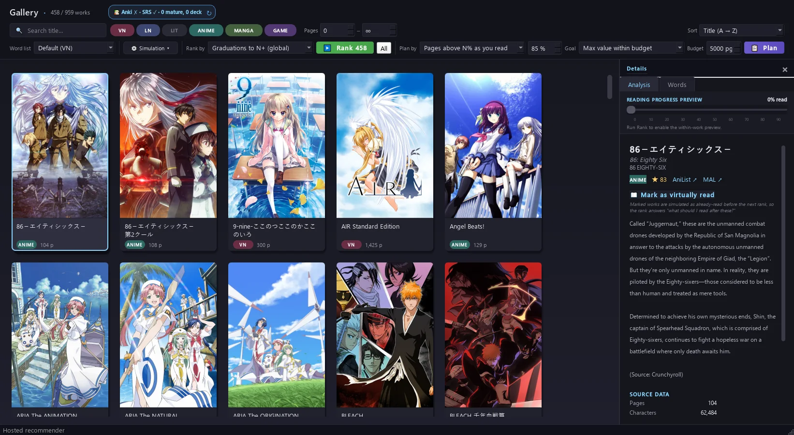

Use the vocabulary you actually have
Combine DokiDokiDict reading history, mature or learning Anki cards, the built-in SRS deck, and words marked known.
Personalized Japanese reading recommender
A work is not simply easy or hard. DokiDokiDict measures it against your vocabulary, simulates words becoming known through repeated encounters as you read, and lets you choose what kind of progress matters to you.

You may know a work's important vocabulary from Anki, from another work, or from words you encountered naturally. A long work may also be difficult at the beginning and much easier after its recurring vocabulary has had time to repeat. The recommender models those differences instead of assigning everyone the same level.
Combine DokiDokiDict reading history, mature or learning Anki cards, the built-in SRS deck, and words marked known.
The engine walks through the work in order. Words can cross your chosen sighting and spacing threshold during the read, so the opening and the later pages are not treated as identical.
Prioritize starting comprehension, i+1 sentences, useful vocabulary, kanji exposure, words graduating, gain per page, or a weighted combination.
Give the planner a page budget or vocabulary target. It finds the sequence of works that reaches your goal most efficiently, accounting for the vocabulary learned at every step.
Rank the filtered catalog by your starting comprehension and inspect exactly which words remain unknown.
Rank by new words introduced, words learned through repetition, or kanji gains, with the option to optimize specifically for the most common words up to any frequency rank you choose.
Balance learning gain against length when you want an efficient shorter step instead of the largest possible work.
Build a sequence whose value is measured by how much it improves your comprehension of the work you eventually want to reach.
Marking a work as virtually read adds the vocabulary gains predicted from that work to the temporary planning state. The next ranking is then calculated as if you had already completed it. Your real reading history, known words, and SRS data are not changed.
This lets you compare complete routes before committing to them. You can ask whether reading Kanon first makes CLANNAD or Majikoi a better next choice, then clear the virtual state and test another route.
The strongest result
See how the unread remainder changes after 10%, 20%, and 30% of a visual novel has been treated as read.
Three practical routes
Compare three optimized paths from knowing the 500 most common VN words to knowing 80% of the top 10,000: a smooth climb, a middle ground balancing readability with major titles, and a deep-end route that prioritizes major titles.
Use the app to rank nearly 1,000 indexed visual novels, light novels, anime, games, and literary works using your own reading history, known words, Anki cards, and built-in SRS deck.